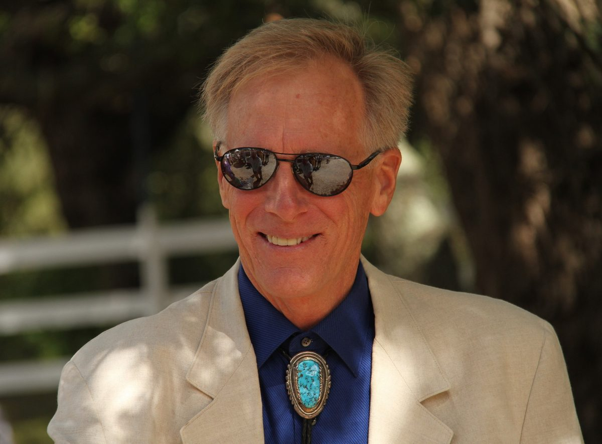
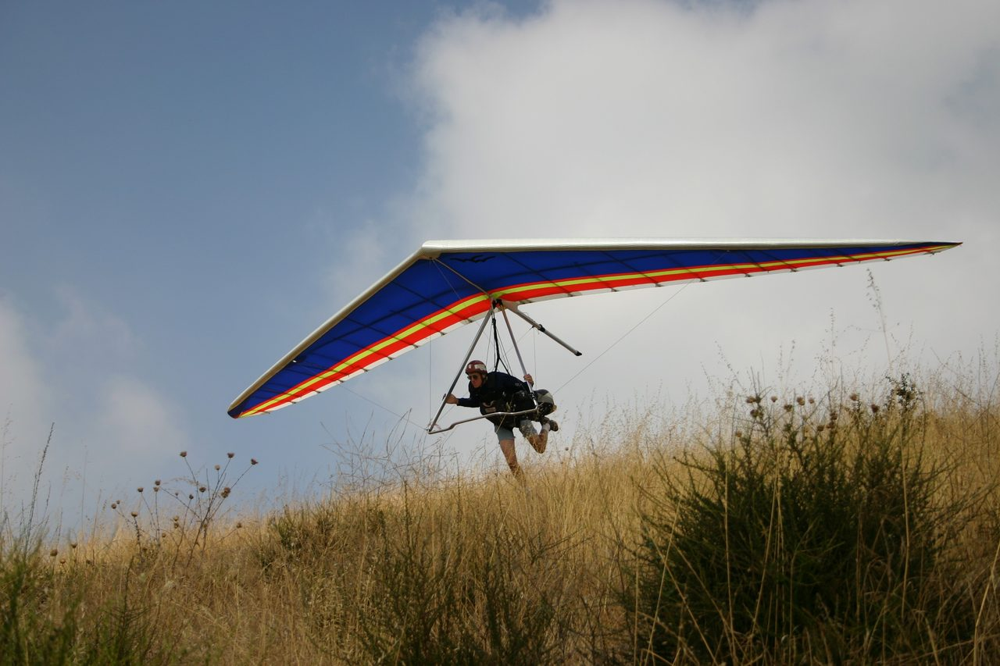
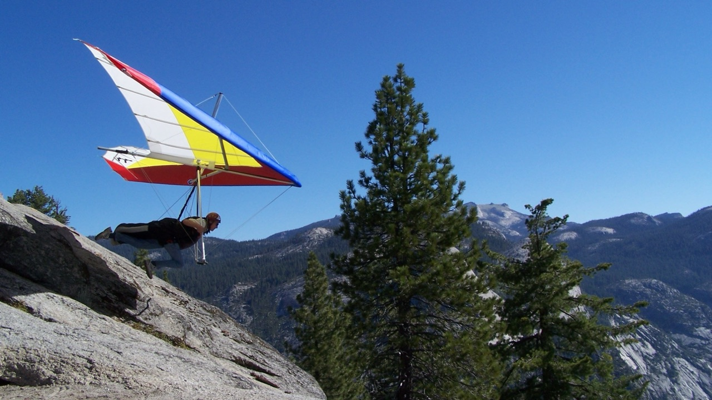
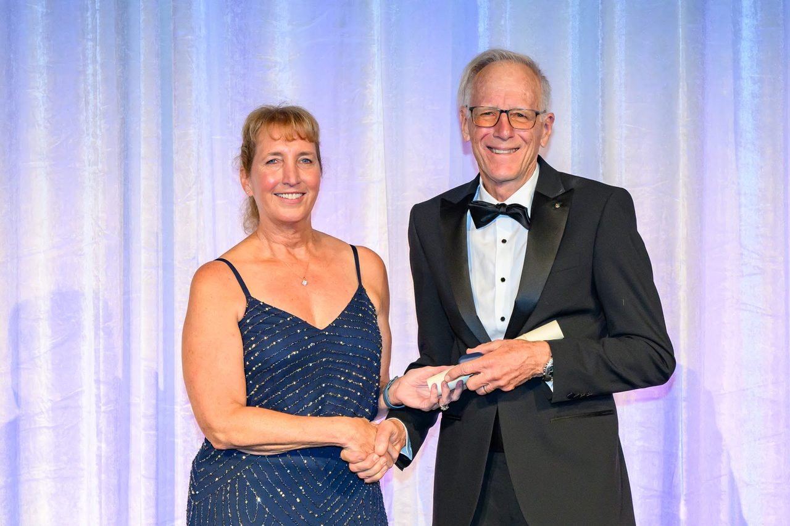
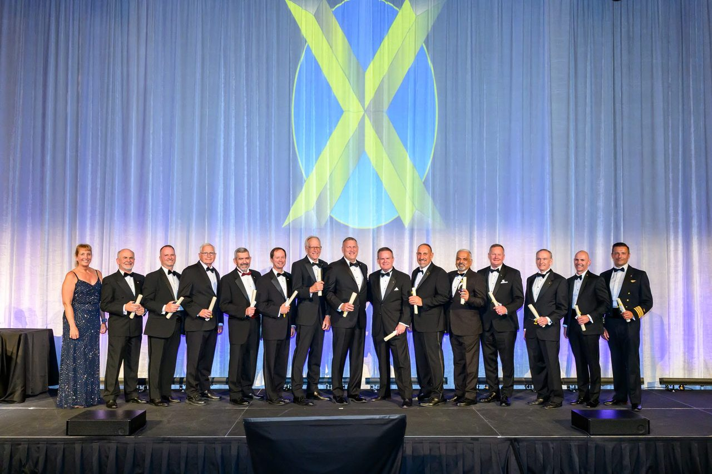
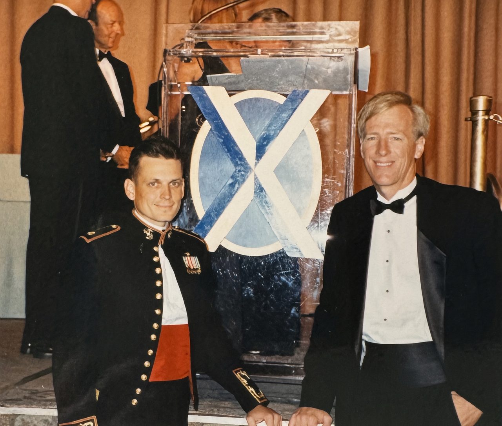
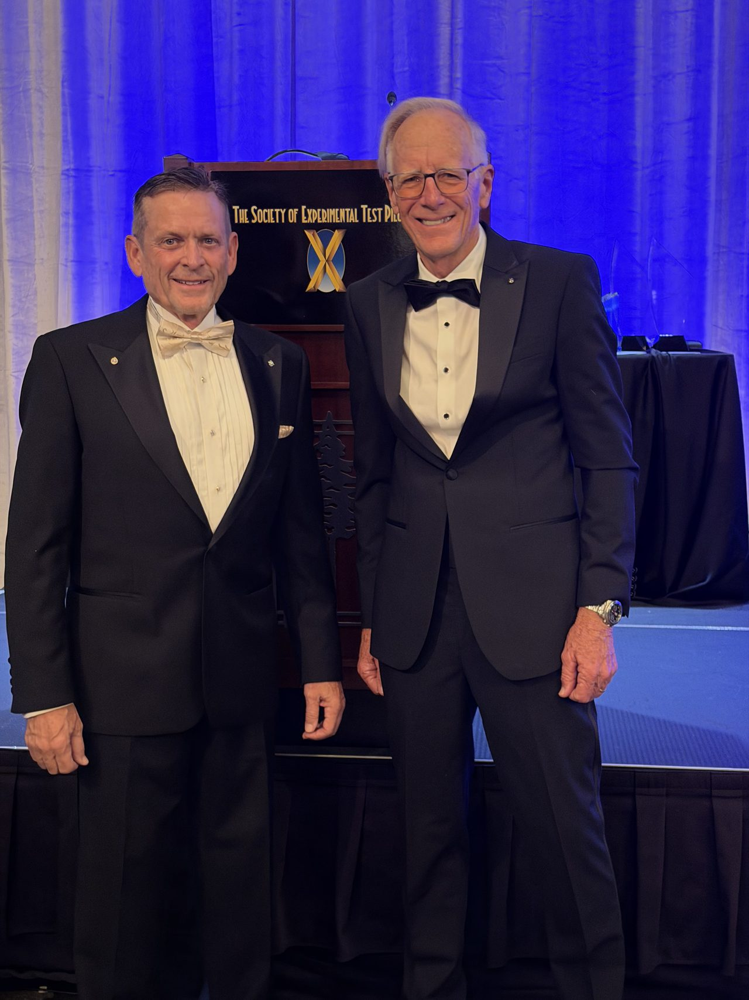

About Mike Meier
In brief
Mike Meier was a developmental, experimental and production test pilot of hang gliders for 45 years, flying the gliders Wills Wing designed and built. He joined the Society of Experimental Test Pilots in 1994 and was made a Fellow in 2026.
Background


Mike graduated from the State University of New York at Stony Brook in 1972 with a degree in physics and a minor in secondary education. After a year teaching physics and physical science in high school, he moved to California in 1973 and took up hang gliding in 1974.
He worked at Wills Wing in Orange, California, from April 1976 until the company closed its US operations in 2021, and became one of its owners and one of its three managing partners. In that time he flight-tested 492 prototype configurations, 127 of which went into production, and flew the production test flights of 6,355 gliders.
He holds a Master pilot rating from the United States Hang Gliding and Paragliding Association (USHPA) and has been a USHPA certified flight instructor. He is an FAA private pilot with single-engine land and glider ratings.
Mike was an Honorary Director of the United States Hang Gliding Association (USHGA, now USHPA) from 1980 to 1997 and served on its Strategic Planning Committee. He was president of the Hang Glider Manufacturers Association from 1982 to 1986, and again from 2003 until the association was dissolved on November 14, 2022. He represented the USHGA on FAA-related committees, among them the Part 103 Users Group at the Riverside FSDO, the ARAC working group in Washington, the USHGA Sport Pilot Task Force, the FAA Part 103 Working Group and the ASTM F37T subcommittee. He was lead technical writer of the ASTM F37.40 task group, which wrote the design standards for weight-shift-control aircraft that the FAA accepts as the airworthiness standards for weight-shift-control light sport aircraft in the United States.
From 1976 to 1987 he flew in competitions, was a top-ranked pilot, and flew for the 1981 US team at the FAI World Championships in Beppu, Japan.
From the biography on the original meiersafe.com, with Mike’s corrections of October 25, 2026: the flight-test numbers are those of SETP’s induction video, which updated the 2015 figures to 2021, and the Hang Glider Manufacturers Association was dissolved in 2022.
Test flying
In 45 years Mike flew experimental, developmental and production tests on Wills Wing’s hang gliders: flow separation studies, maximum roll rate tests, spin testing, and the final quality-control flight on gliders coming off the line.



Photos: Mike’s own, from his flight-test video and slides for the 2015 talk; licensed CC BY-SA 4.0 like his text (License).
SETP
Below: from the 2018 Gulfstream talk, not in the paper; the years of membership and fellowship from Mike’s email of October 23, 2026.
Mike first got involved with SETP in 1992, co-presenting a paper with Mark Stucky at the national symposium on applying classical flight-test techniques to a modern high-performance hang glider. He applied for membership afterwards, on the strength of his experimental test work in hang gliders, and SETP accepted him as a member in 1994. He was made an Associate Fellow in 2018 and a Fellow in 2026.
By accepting my membership, the Society had, in effect, called my bluff. … And I had nothing. … Luckily, within about a year of coming to this realization, I had the good fortune to nearly kill myself while landing a hang glider.




Induction photos: SETP’s, shown with SETP’s permission. The photos with Mark Stucky: from Mike’s collection.
Awards
| Date | Award |
|---|---|
| 2026 | Made a Fellow of the Society of Experimental Test Pilots. |
| February 2018 | Elected an Associate Fellow of the Society of Experimental Test Pilots. |
| March 2016 | The Rob Kells Memorial Award, given by the United States Hang Gliding and Paragliding Association for lifetime service to the hang gliding community. |
| July 2015 | Award of Appreciation from the Royal Australian Air Force 42 Wing for support of Squadron Safety Day. |
| May 2015 | Elected to the Rogallo Foundation Hall of Fame for career contributions to the development and promotion of the sport of hang gliding. |
| March 2015 | The Jack Northrop Award for the Most Outstanding Technical Paper presented at the 45th Annual West Coast Symposium of the Society of Experimental Test Pilots, for Lessons Learned and Murphy’s Corollary. |
| April 2013 | Letter of Appreciation from Scaled Composites for Technical Assistance in helping the team to reach the milestone of the first powered flight in Spaceship 2. |
| March 2008 | National Aeronautic Association Safety Award, for making a significant contribution to the safety of the sport of hang gliding and paragliding. |
| October 2004 | ASTM Award of Appreciation, for work on development of technical standards for Light Sport Aircraft. |
| March 2003 | United States Hang Gliding Association Exceptional Service Award, for work on behalf of USHGA in the development of FAA regulations. |
| March 1994 | Elected to membership in the Society of Experimental Test Pilots. |
| February 1992 | Appointed FAA Accident Prevention Counselor, Riverside Flight Standards District Office (FSDO). |
| November 1990 | National Aeronautic Association Certificate of Honor, for making a significant contribution to the safety of the sport of hang gliding. |
| February 1986 | United States Hang Gliding Association Presidential Citation, for Outstanding Leadership of the Hang Glider Manufacturers Association and the USHGA Rating and Competition Programs. |
| 1982 | Hang Glider Manufacturers Association Exceptional Merit Award, for leadership of the HGMA. |
From the awards list on the original meiersafe.com, which Mike confirmed complete and correct on October 25, 2026; the 2026 Fellowship from his email of October 23, 2026.
Where the paper has been presented
Mike presented the paper fifteen times from 2015 to 2018, to test pilots, hang-glider pilots and aerospace companies, and discussed it on On Condition, the Flight Test Safety Committee’s podcast, in 2024. Next: the National Test Pilot School, Mojave, December 11, 2026.
The talk on video, what audiences said and more
The full list of presentations, the 2015 Anaheim talk on video, and what audiences said are on Speaking.
Contact
For speaking requests, briefing requests and corrections, email Mike at mikemeier@meiersafe.com.
Text and Mike’s test-flying photos CC BY-SA 4.0; the other photos and the SETP video are credited where they appear and are not covered (License).